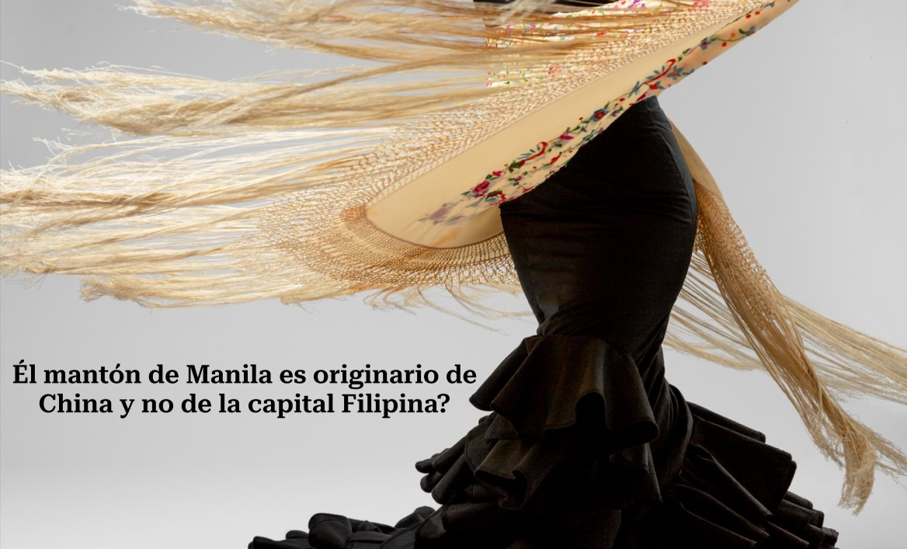
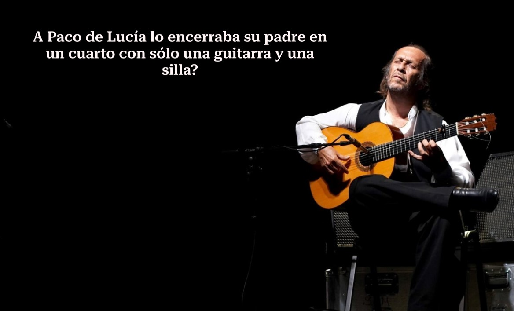

Codiciada prenda de vestir e ícono en el mundo del flamenco tanto como vestimenta como accesorio en el baile, este chal elaborado en seda se transformó en mantón con la adición de flecos y bordados de flores dándole un toque único y sofisticado cuya confección se ha convertido en todo un arte.
A los 9 años su padre lo sacó del colegio y le impuso un riguroso entrenamiento diario encerrándolo en un cuarto diez horas al día para que aprendiese a tocar. Paco fue autodidacta, no sabía leer un pentagrama, motivo por el que tuvo que memorizar todo el Concierto de Aranjuez antes de tocarlo, lo que demuestra su virtuosismo con la guitarra.


Existen diferentes teorías sobre el origen de la palabra “flamenco”. Una de las más extendidas es que vendría del árabe “Felah-mengus”, que significa “campesino errante”. Otras teorías lo vinculan a la antigua Flandes o incluso a un cuchillo.